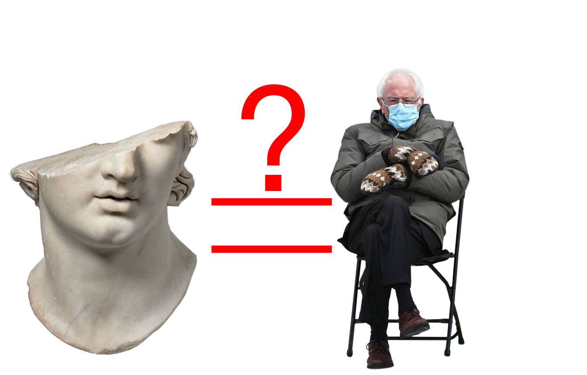

01.21.2021
The internet is a crazy place. So is the real world. The internet reflects what the real world wants to say. I think it is interesting that in these times of divided politics and polarization of factions, we seem to all find a place on the internet. This leads to the art world, this encompassing architecture, fine art, music, etc. A lot of the art world still takes place in a physical sense, but is this really the best palce to reflect our culture. Isn't art supposed ot reflect humanity and be the long lasting evidence of our culture? Maybe its because the internet seems passing, it doesn't seem as permanent as a marble sculpture. I think this is exactly where the art world is wrong. Our lives have become this ever-changing thing with our culture becoming easily consumable and fleeting. I think that art should take place on the internet, on the forums, in the meme communities. Are memes not art? I think they hold just as much, if not more cultural significance as a painting hanging in a gallery. This is the same with architecture. Practicing architecture has changed dramatically over the years. Are physical buildings still as important as the our homes on the web? Isn't architecture supposed to fashion a space for life? I think that space has changed. Forever. I think that we are in a unique position where people are realizing the power of the internet, following this election, pandemic, and social awakening, and I think that the internet will be and will have to be the place where our art lives.